RCr 66 // COLLECTIVE RESEARCH ARCHIVE
Search the Archive
Multispecies
Biological Layers
Metal Artefacts
Collective Ritual
Landscape Systems
Oral Histories
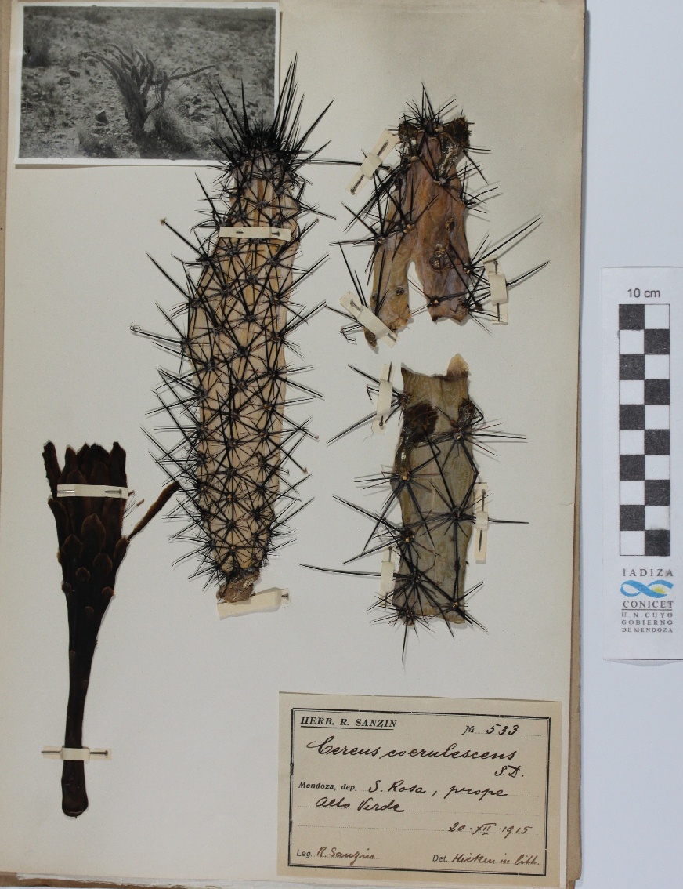
Plant Symbiosis
Cereus ambiguus
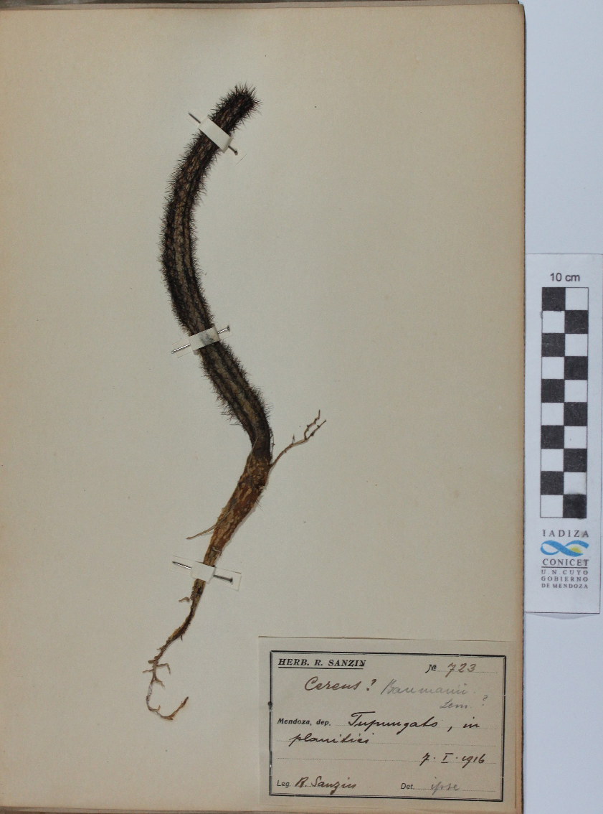
Plant Symbiosis
Opuntia dulcisferra
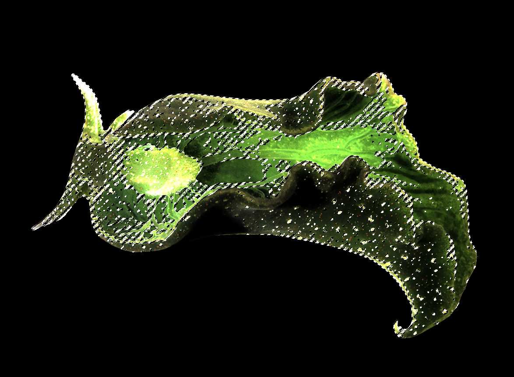
Collective Organism
Viridiluma mollis
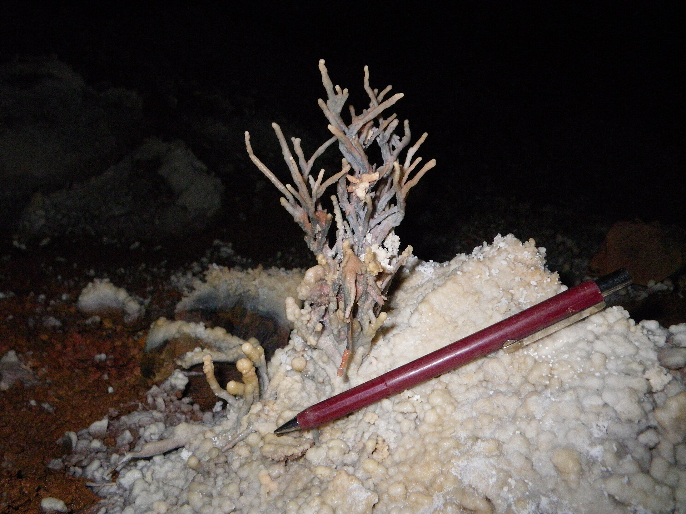
Mineral Formation
Photosensitive Calcite Structures
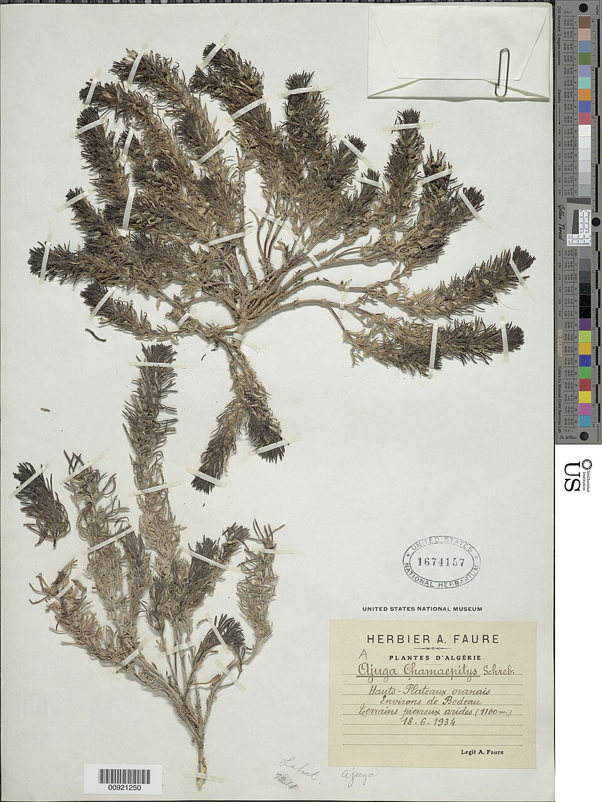
Smoke Adaptive Flora
Nebula Folia
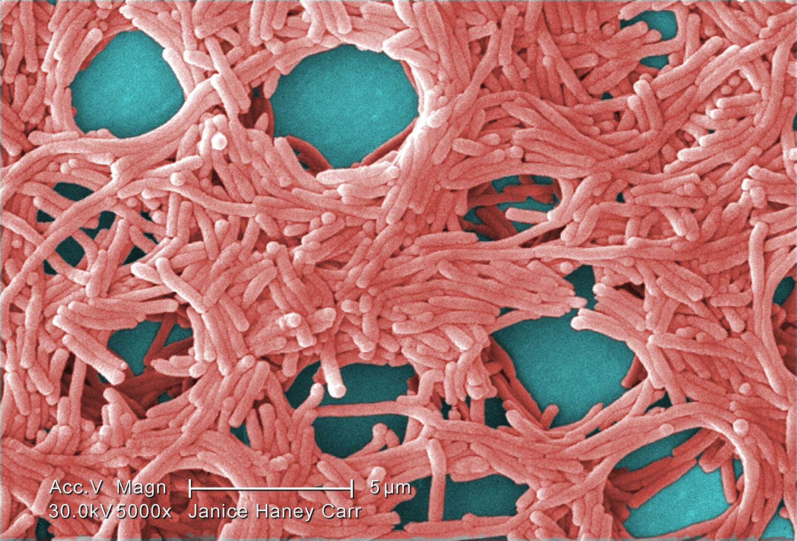
Bacterial Colony
Pelvibacter lucens
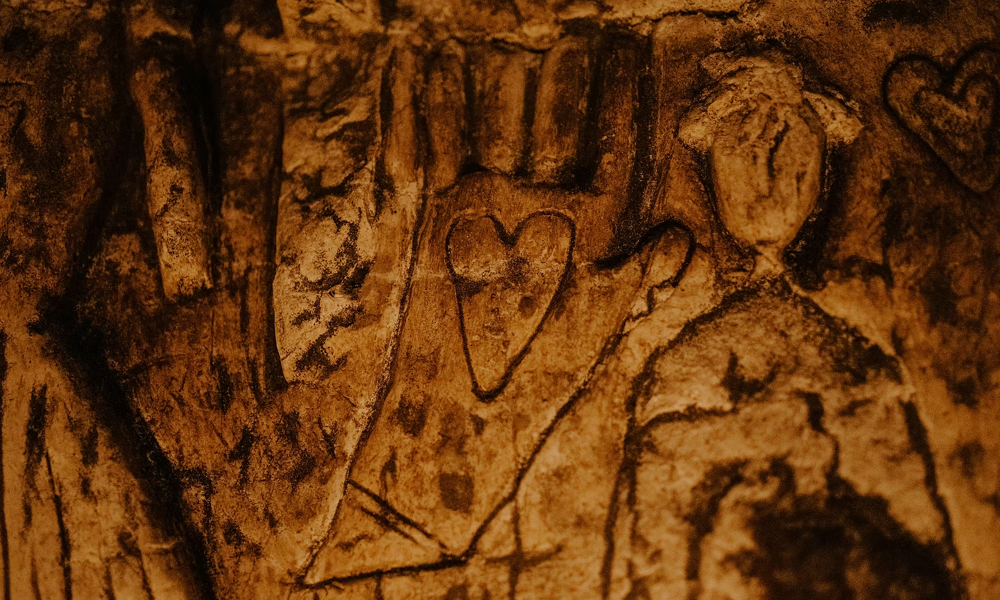
Symbiotic Relation
Lichen Exchange Systems
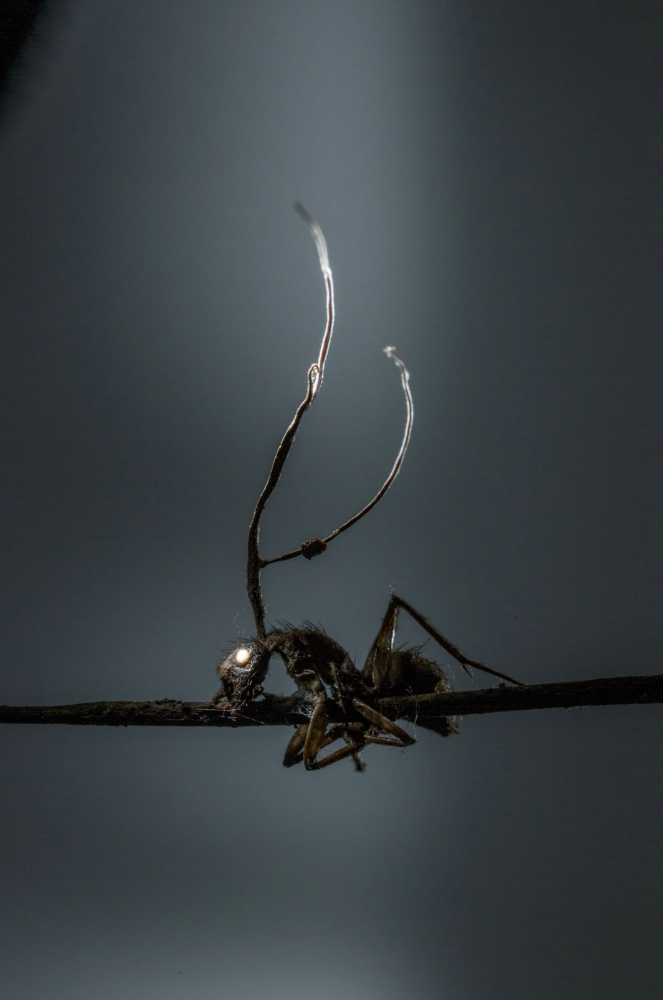
Fungal Symbiosis
Formica mycelia
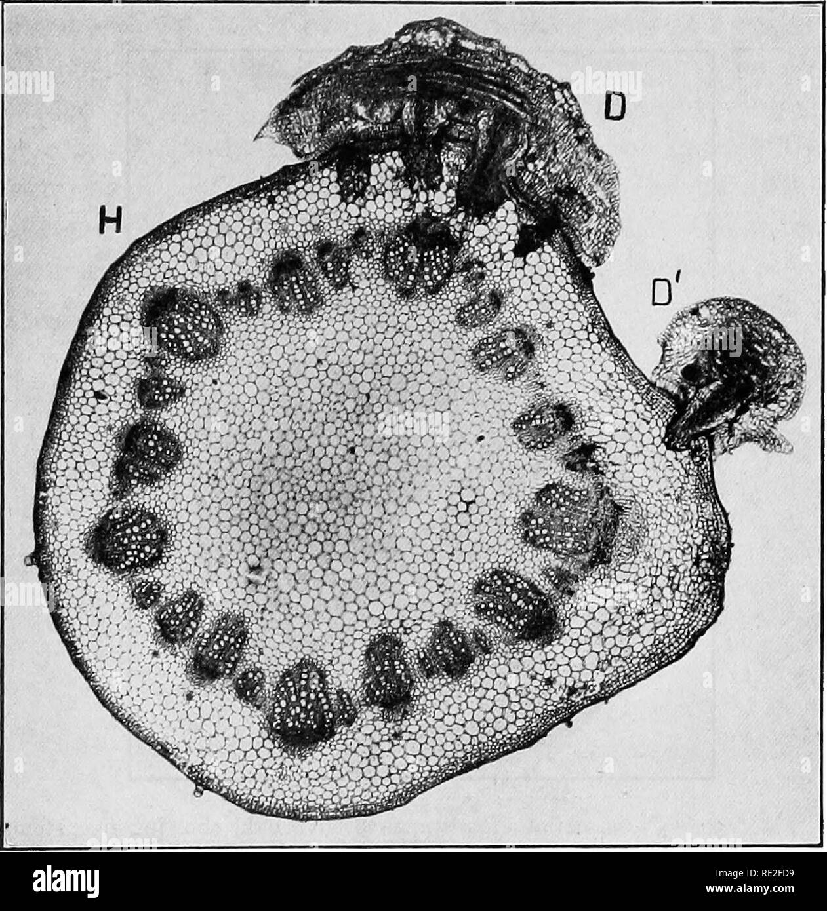
Human-Bacterial Symbiosis
Somatic Exchange Networks
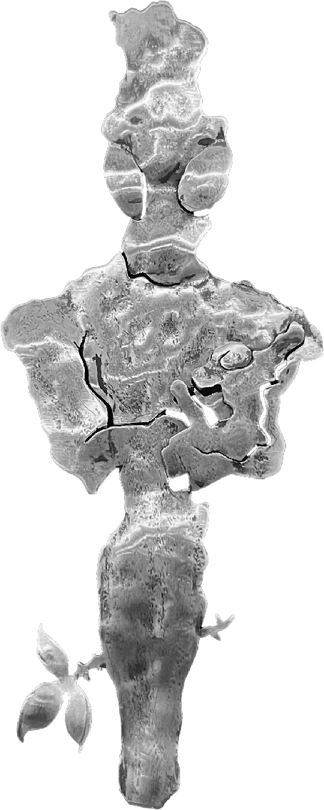
Embossed Artefact
Aerosymbiont
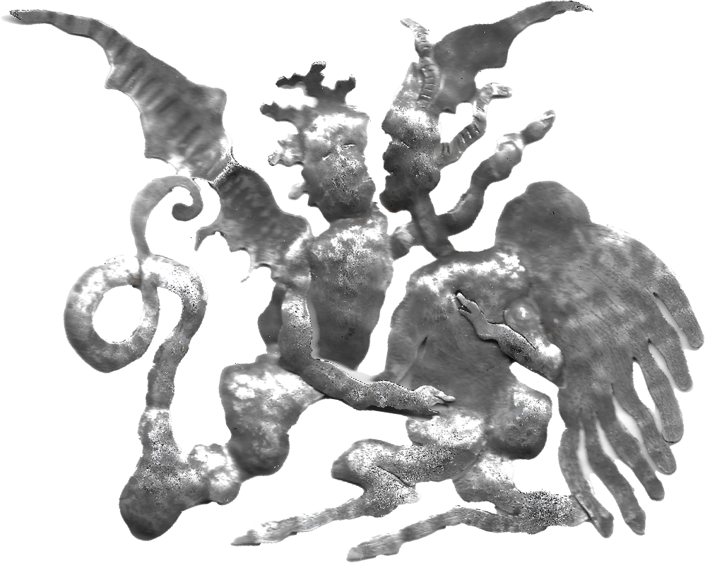
Embossed Artefact
CareUnit-Seraph
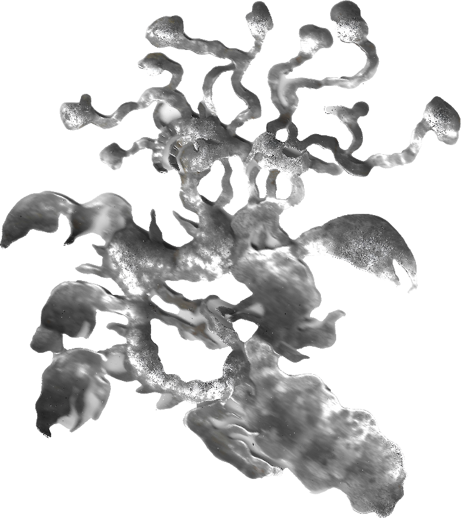
Embossed Artefact
Thermadrone
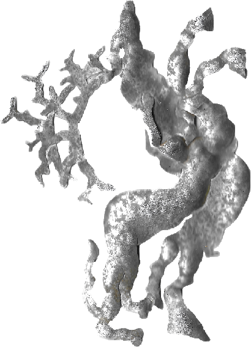
Embossed Artefact
Cervoid Interface
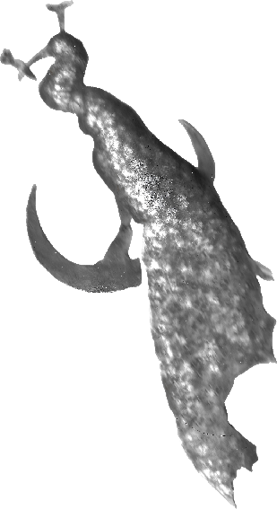
Embossed Artefact
Moonufowl
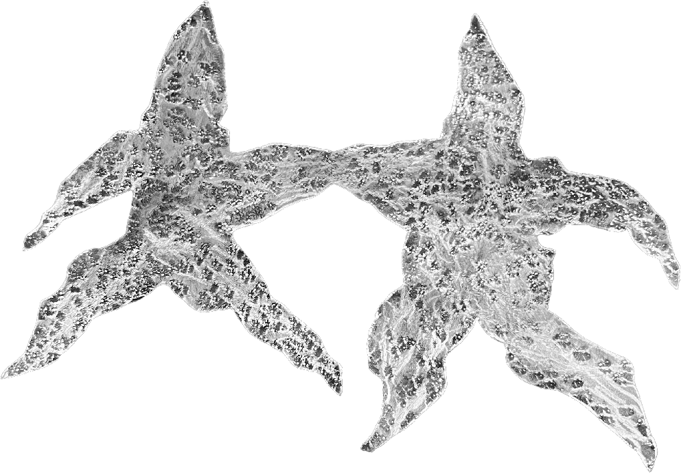
Cosmic System
Stellar Drift Field

Biological Mirror Case
Genetic Dual Formation

Geological Field System